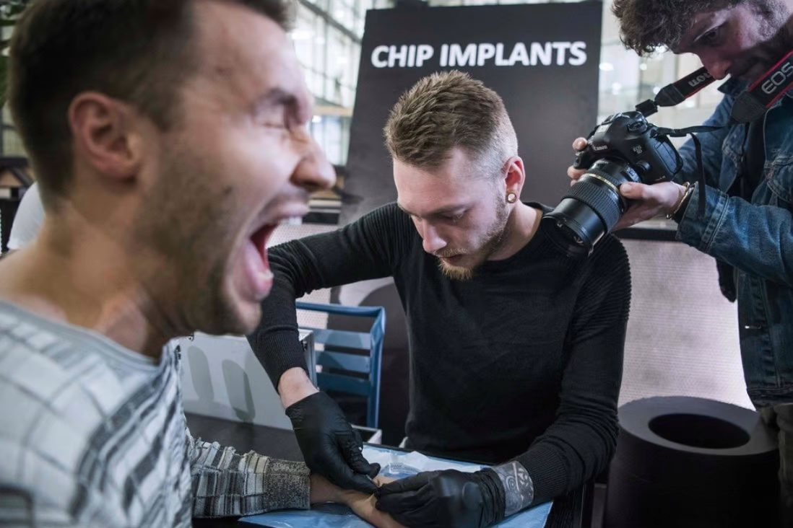
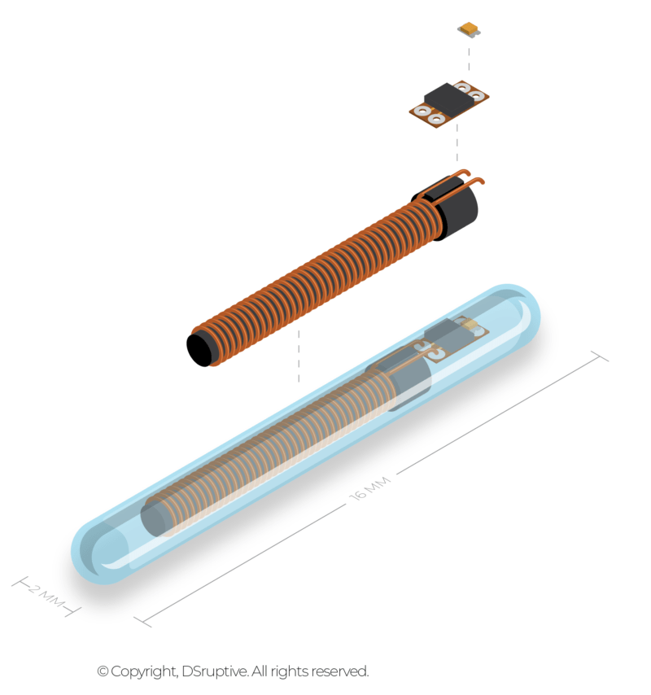

На днях по Сети прокатилась новость, что шведский стартап, базирующийся в коворкинге Epicenter, предлагает вживить в руку чип о вакцинации от коронавируса всем желающим. Он также может содержать любые другие данные, вплоть до офисных документов, пропусков в здания и не только. Новость вызвала бурную реакцию со стороны пользователей, при этом в данной технологии нет ничего нового, а сами энтузиасты вживляют людям импланты уже по меньшей мере семь лет. Рассказываем, откуда взялась эта инициатива и насколько это может быть удобно и безопасно.

Шведские энтузиасты вдохновлялись так называемым «Проектом Киборг». Глава проекта Кевин Уорвик и его команда с кафедры кибернетики Редингского университета в Великобритании занимались разработкой технологии имплантации чипов и изучали влияние, которое они могли оказывать на повседневную жизнь человека. Одной из целей проекта также было создание более комфортной среды для человека, облегчив его коммуникации с электронными устройствами.
В ходе первой фазы проекта, начавшейся в 1998 году, Уорвику имплантировали небольшой чип в предплечье, после чего он перемещался по залам и кабинетам кафедры кибернетики, управляя с помощью чипа дверями, освещением, обогревателями и другими электронными устройствами. Вторая фаза началась в 2002 году, во время которой Уорвику вживили уже массив из сотни электродов, интегрированных с его нервной системой. Этот массив фиксировал сигналы от нервной системы и использовал их для управления электрической инвалидной коляской и интеллектуальной искусственной рукой, разработанной доктором Питером Кибердом. Имплант также мог создавать искусственные ощущения, стимулируя отдельные электроды внутри матрицы. Эксперименты по этому направлению проводились при участии жены Уорвика, которой вживили менее сложный имплант, также подключенный к её нервной системе. – это настоящий ветеран Intel с более чем 30-летним стажем, стоящий за многими ее наиважнейшими достижениями и разработками. Он был назначен на пост СЕО компании в январе 2021 г. после того, как ее едва не погубил Роберт Свон (Robert Swan), предыдущий гендиректор и бывший финансовый директор Intel. Весной 2021 г. Гелсингер анонсировал многолетнюю программу по поднятию Intel с колен, в которую, правда, не входили достижение дна на рынке серверных процессоров и громогласный уход из России.
Микроэлектродная матрица, состоящая из 100 отдельных электродов, имплантированных в срединный нерв левой руки. 25-канальный амплифиер усиливает нейронные сигналы от каждого электрода в 5000 раз и фильтрует сигналы с угловыми частотами 250 Гц и 7,5 кГц. Затем усиленные и отфильтрованные электродные сигналы передаются в процессор нейронных сигналов, где они оцифровываются со скоростью 30 000 выборок в секунду/электрод и сканируются в онлайн-режиме на наличие нейронных всплесков. Это значит, что только 25 из 100 каналов можно просматривать одновременно».
Один из основателей шведского стартапа Йован Остерлунд узнал об эксперименте Уорвика через несколько лет после его окончания. Уже на тот момент он и ещё несколько энтузиастов экспериментировали с новыми технологиями и были увлечены идеями, которые в своё время высказывал Уорвик. Например, друг Йована взял чип, разработанный для своей собаки, и имплантировал себе под кожу. Как говорит энтузиаст, это было скорее шуткой и розыгрышем — идентифицирующие устройства определяли его друга как лабрадора. Тем не менее, Йован всерьёз задумался идеей разработки чипа для людей.
В 2013 году Йован наткнулся на немецкую компанию, продающую промышленные чипы с поддержкой NFC (чипы для собак этот протокол не поддерживали). Он закупил партию и создал базовую программу для сопряжения чипа с телефоном Samsung 5, чтобы можно было одним лишь прикосновением набирать номер телефона жены. Взволнованный успехом, он обратился к своему другу, биохакеру Ханнесу Шебладу, и уже в 2014 году в Швеции в коворкинге Epicenter прошла кибервечеринка, на которой всем желающим вживляли под кожу чипы, именуемые RFID (радиочастотные идентификаторы). На тот момент с чипами уже ходило около 50 человек. Добровольцев энтузиасты находили через соцсети и хакерские сообщества в Швеции.
Кибервечеринки проходили в неформальной атмосфере относительно регулярно. Посетителям рассказывали о возможном будущем, где у каждого есть многофункциональный имплантированный чип, с помощью которого они могут одним лишь прикосновением управлять техникой, открывать двери, распечатывать документы и не только. Фактически на старте RFID был пригоден только для разблокировки смартфона и открытия дверей через специальные беспроводные замки, продававшиеся отдельно. Однако Шеблад мечтал пойти дальше и существенно расширить функционал чипа, сделав его важным помощником в повседневной жизни. Например, как указывал энтузиаст, чипы можно использовать для контроля за распорядком дня и управлением любой активностью, просто отмечаясь на специальных датчиках (при отходе ко сну — датчик сна и т.п.) вместо ручного введения в программе на смартфоне.
Посетители мероприятия встретили инициативу скептично. Часть из них указывала, что нет смысла проходить болезненную процедуру и вживлять себе чип, чтобы просто открывать двери. Другие отмечали, что не заметили обещанного интуитивно понятного управления. Руку приходилось выгибать неестественным образом, чтобы задействовать чип. Кроме того, чтобы заявленная система работала, приходилось докупать сторонний софт или оборудование, такое как специальные электронные замки. Сами чипы на старте стоили около $100 с учётом стоимости имплантации. После, по некоторым источникам, цена поднялась до $300. В прямой продаже этих чипов всё ещё нет.
